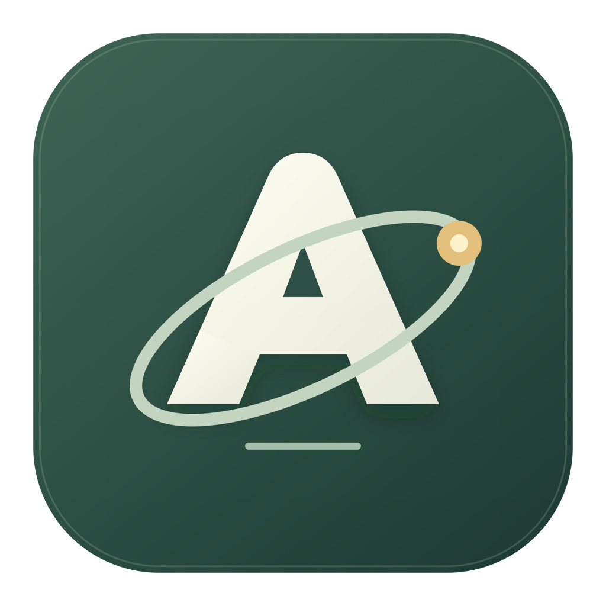
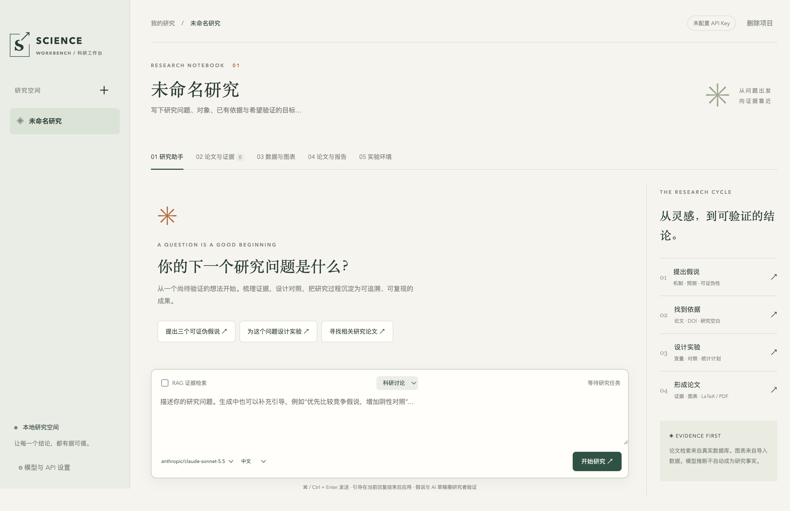

把灵感，变成可证伪的假说。
梳理依据、竞争解释与预测。AI 流式输出，Markdown 与 LaTeX 公式边生成边呈现；也可随时补充会话引导。

AIScienceRESEARCH WORKBENCHYOUR NEXT RESEARCH QUESTION STARTS HERE
把 AI 带进你的科研工作流。
从提出假说、追踪文献，到实验、验证与论文，
在一个安静的桌面工作台里，走完整个过程。
macOS · Windows · Linux ／ 使用你的 ZenMux API Key
一个好问题
SCIENCE WORKBENCH ／ 你的本地研究空间
01—05
INSIDE YOUR RESEARCH SPACE
追问一篇论文，比较几份数据，
或把一个数学想法变成可检查的命题。
检索论文 → 加入证据库 → 获取摘要或开放全文 → 建立 RAG 索引。
“结合这篇论文和我的笔记，还有哪些假说值得验证？”
带着出处继续讨论。把原文结论、研究局限和新的推测分开，逐步形成下一轮研究问题。
工作流示意，不是实际论文结论。选择文件或数据目录，在 CSV 与 Excel 工作表之间切换，分别查看统计与图表。
“比较各组的统计摘要，下一步应该检查什么？”
AI 接收各表统计摘要，帮助提出分析方向。原始行不会自动上传，不同数据表也不会被自动合并。
Excel 支持 .xlsx；公式仅读取已有缓存值。AI 辅助填写数学问题、公式、假设与初步证明。审阅采用后，再起草 Lean 命题。
“这个证明是否通过了机械检查，命题是否忠实于原意？”
模型负责提出候选，Lean 负责检查固定命题下的证明。未验证的思路清楚标注，不能当作已证明的研究结果。
需要 Lean / Docker；自然语言与形式化命题仍需人工核对。01 / THE RESEARCH CYCLE
保留问题、证据与推理的来路，
让下一步有方向，让结果可复核。
梳理依据、竞争解释与预测。AI 流式输出，Markdown 与 LaTeX 公式边生成边呈现；也可随时补充会话引导。
检索 Europe PMC 与 Crossref。加入证据库后继续追问、寻找研究空白；可删除条目并同步清理索引。开放全文、摘要和资料进入 RAG，回答可定位到来源片段。
导入最多 5 个 CSV / Excel 文件或数据目录，切换工作表查看统计与图表，创建项目专属 Python / Jupyter 环境。回收计算环境，保留研究文件。
结合证据与代码实现生成报告，选择语种，导出 LaTeX / PDF。输入审稿意见，逐条修订并保留原稿。
02 / BUILT FOR CAREFUL THINKING
粘贴图片，上传 CSV、PDF、Word、Excel 和 PowerPoint。每条消息最多 6 个附件，缩略图预览，一键删除。
选择或拖入代码目录。AI 按需只读检索实现，以文件路径和行号为报告提供参考。
AI 辅助起草数学问题、公式与证明思路；Claude 与 Gemini 独立审查。设置开启时，失败、不确定或接口错误均阻止候选稿进入报告。
冻结 Lean 命题，让 AI 生成候选证明，由 Lean 4 + Mathlib 机械检查；自然语言与形式化命题仍需人工核对。
支持 20 种主要报告语种。中英文与公式排版，真实数据图表，以及审稿后的定向改进。
本地保存项目与索引，API Key 使用系统加密存储。模型请求与向量化所需内容会发送到 ZenMux。
03 / BRING YOUR MODELS
在设置中保存并检测你的 ZenMux API Key。
没有 Key？通过邀请链接前往 ZenMux ↗
GET STARTED
现有项目与资料保存在本地。
按需要开启模型、检索和计算能力。
选择适合系统的安装包。macOS Apple Silicon 版本已签名并公证。
选择你的版本 ↓打开“模型与 API 设置”，保存 ZenMux Key 并检测可用性。
没有 Key？前往 ZenMux ↗创建研究项目，检索论文、导入资料或数据。从一个具体、可验证的问题开始。
阅读使用说明 ↗QUESTIONS, ANSWERED
可以检索论文、编辑项目和使用本地 CSV / Excel 描述统计。AI 对话、AI 辅助填写和 Embedding 索引需要有效的 ZenMux Key。排版导出还受验证设置及本机运行时约束。
项目和索引保存在本机。模型请求会把必要的对话、证据片段、笔记和统计摘要发送到 ZenMux；建立 RAG 索引会发送被索引的文本。主动添加的会话附件也会按任务发送，API Key 使用系统加密存储。
支持 Markdown、LaTeX 与 PDF，支持 20 种报告语种。PDF 需要本机 XeLaTeX、相关排版包及对应语种字体；中英文排版在 macOS 上已验证。AI 草稿、引用与研究结论需要作者核验。
两个模型的一致意见属于复核，不能替代证明。Lean 内核检查针对固定的形式化命题及其公理依赖；仍需核对该命题是否忠实表达原始问题，以及数据、假设和实验设计是否成立。
04 / YOUR LOCAL LAB
正在读取最新安装包…
Apple Silicon · DMG
x64 · EXE 安装程序
x64 · DEB
x64 · RPM
macOS 安装包经 Developer ID 签名与 Apple 公证后发布。Windows 安装包暂未进行代码签名。可通过每个包旁的 SHA-256 文件核对下载。
当前重点验证 macOS Apple Silicon；Windows / Linux 为预览版本。Python 实验环境、XeLaTeX 与 Lean / Docker 需要额外运行时；自动配置与字体方案目前以 macOS 为主，其他平台需自行配置。内核验证不能代替语义审查，AI 草稿仍需作者核验。
安全状态：尚未执行 PentAGI 扫描。查看已验证范围 ↗